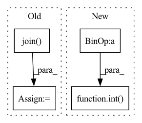

Pattern ID :6483

Before Change
def split(ratio):
home = os.getenv("HOME")
data_dir = osp.join(home, ".pyg")
root = osp.join(data_dir, "data", "products")
dataset = PygNodePropPredDataset("ogbn-products", root)
data = dataset[0]
csr = get_csr_from_coo(data.edge_index)
After Change
total_range = torch.arange(total_num, dtype=torch.long)
if isinstance(ratio, float):
perm_range = torch.randperm(int(total_num * ratio))
prev_order[:int(total_num * ratio)] = prev_order[perm_range]
new_order = torch.zeros_like(prev_order)
new_order[prev_order] = total_range
index = 0
In pattern: SUPERPATTERN
Frequency: 3
Non-data size: 4
Instances
Fragment ID: 22526535
Project Name: quiver-team/torch-quiver
Commit Name: fee26bd6987803a161002d651663bd87dda521ab
Time: 2021-10-05
Author: ee_dalong@163.com
File Name: benchmarks/ogbn_products_sage/shuffle.py
M Class Name: AnonimousClass
N Class Name: AnonimousClass
M Method Name: split(3)
N Method Name: split(1)
M Parent Class:
N Parent Class:
M File Name: benchmarks/ogbn_products_sage/shuffle.py
N File Name: benchmarks/ogbn_products_sage/shuffle.py
M Start Line: 20
M End Line: 47
N Start Line: 19
N End Line: 45
'>
Before Change
frames.append(data)
print("录音已结束!")
audio_data = b"".join(frames)
if save_path is not None:
os.makedirs(os.path.dirname(save_path), exist_ok=True)
wf = wave.open(save_path, "wb")
wf.setnchannels(self.channels)
After Change
:return: 音频的numpy数据
print("开始录音......")
num_frames = int(record_seconds * self.sample_rate)
data = self.default_mic.record(samplerate=self.sample_rate, numframes=num_frames, channels=self.channels)
audio_data = data.squeeze()
print("录音已结束!")
if save_path is not None:
'>
Fragment ID: 22526533
Project Name: yeyupiaoling/audioclassification-pytorch
Commit Name: 4e40d2876f4e146adf88a406af712366ff36d830
Time: 2023-03-23
Author: yeyupiaoling@foxmail.com
File Name: macls/utils/record.py
M Class Name: RecordAudio
N Class Name: RecordAudio
M Method Name: record(3)
N Method Name: record(3)
M Parent Class:
N Parent Class:
M File Name: macls/utils/record.py
N File Name: macls/utils/record.py
M Start Line: 31
M End Line: 45
N Start Line: 24
N End Line: 30
'>
Before Change
frames.append(data)
print("录音已结束!")
audio_data = b"".join(frames)
if save_path is not None:
os.makedirs(os.path.dirname(save_path), exist_ok=True)
wf = wave.open(save_path, "wb")
wf.setnchannels(self.channels)
After Change
:return: 音频的numpy数据
print("开始录音......")
num_frames = int(record_seconds * self.sample_rate)
data = self.default_mic.record(samplerate=self.sample_rate, numframes=num_frames, channels=self.channels)
audio_data = data.squeeze()
print("录音已结束!")
if save_path is not None:
'>
Fragment ID: 22526536
Project Name: yeyupiaoling/voiceprintrecognition-pytorch
Commit Name: 5c4517b82c3634a6908e35f143fb908e35fd71d8
Time: 2023-03-23
Author: yeyupiaoling@foxmail.com
File Name: mvector/utils/record.py
M Class Name: RecordAudio
N Class Name: RecordAudio
M Method Name: record(3)
N Method Name: record(3)
M Parent Class:
N Parent Class:
M File Name: mvector/utils/record.py
N File Name: mvector/utils/record.py
M Start Line: 31
M End Line: 45
N Start Line: 24
N End Line: 30